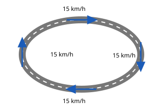

Die Richtung ändern
Mit einem KI-Tutor lernen
Ein KI-Tutor erklärt dir diese Seite und hilft dir bei den Übungen. Wähl deinen Assistenten:
Mit Claude öffnen Mit ChatGPT öffnen Mit Mistral Vibe öffnen
Du nutzt dein eigenes Konto beim Anbieter. Der Assistent ist kein Angebot von lernapps.net: lernapps liefert nur Inhalte und Übungen. Die Wahl gilt für alle Seiten, nur auf diesem Gerät.
Was du schon weißt
Du weißt jetzt: Wird das Fahrrad schneller (die Geschwindigkeit wird größer), beschleunigt es. Wird es langsamer, bremst es ab. Nun fährst du auf einem runden Radweg und lässt den Tacho die ganze Zeit auf 15 km/h stehen. Ändert sich deine Bewegung dann nicht?
Anschaulich erklärt

Alle vier Fahrräder fahren mit 15 km/h. Achte auf die Richtung der Pfeile.
Quelle: eigene Zeichnung. Lizenz: CC-BY-4.0.Eine Bewegung hat zwei Eigenschaften: wie schnell (das zeigt der Tacho) und in welche Richtung. Auf dem runden Weg bleibt der Tacho gleich, aber die Pfeile zeigen jedes Mal woandershin. Die Richtung ändert sich, also ändert sich die Bewegung.
| Situation | Was sich ändert |
|---|---|
| Geradeaus mit 15 km/h | nichts |
| Kurve mit 15 km/h | die Richtung |
| Anfahren geradeaus | die Geschwindigkeit wird größer |
| Bremsen in der Kurve | die Geschwindigkeit wird kleiner und die Richtung ändert sich |
Merke
Die Bewegung ändert sich, wenn die Geschwindigkeit größer oder kleiner wird oder wenn sich die Richtung ändert.
Übung
Übung
Lösung
Ja, die Richtung ändert sich. richtige Antwort
Der Tacho bleibt bei 50 km/h, aber das Auto fährt im Kreis. Seine Fahrtrichtung ändert sich dauernd.
Nein, der Tacho zeigt immer 50 km/h.
Der Tacho zeigt nur, wie schnell das Auto ist. Die Richtung zeigt er nicht.
Nein, nur beim Bremsen ändert sich die Bewegung.
Auch eine neue Richtung ist eine Änderung der Bewegung, selbst wenn der Tacho gleich bleibt.
Ja, das Auto wird dauernd schneller.
Der Tacho bleibt bei 50 km/h, das Auto wird also nicht schneller.
Eine Bewegung ändert sich auch dann, wenn nur die Richtung wechselt.
Mehr dazu:
Übung
Lösung
Ein Zug fährt aus dem Bahnhof. richtige Antwort
Der Zug wird schneller, seine Geschwindigkeit wird größer.
Ein Fahrrad rollt geradeaus mit gleichbleibend 20 km/h.
Weder die Geschwindigkeit noch die Richtung ändert sich.
Ein Skater fährt mit gleichem Tempo um eine Kurve. richtige Antwort
Das Tempo bleibt gleich, aber die Richtung ändert sich.
Ein Bus bremst vor der Haltestelle. richtige Antwort
Der Bus wird langsamer, seine Geschwindigkeit wird kleiner.
Die Bewegung ändert sich, wenn die Geschwindigkeit größer oder kleiner wird oder wenn sich die Richtung ändert.
Mehr dazu:
Übung
Lösung
Richtige Antwort: Ein Zug fährt an. – Die Geschwindigkeit wird größer.; Ein Auto bremst vor der Ampel. – Die Geschwindigkeit wird kleiner.; Ein Fahrrad fährt mit 15 km/h um eine Kurve. – Die Richtung ändert sich.; Ein Fahrrad rollt mit 15 km/h geradeaus. – Nichts ändert sich.
Anfahren macht die Geschwindigkeit größer, Bremsen kleiner, eine Kurve ändert die Richtung. Beim gleichmäßigen Geradeausfahren ändert sich nichts.
Mehr dazu: